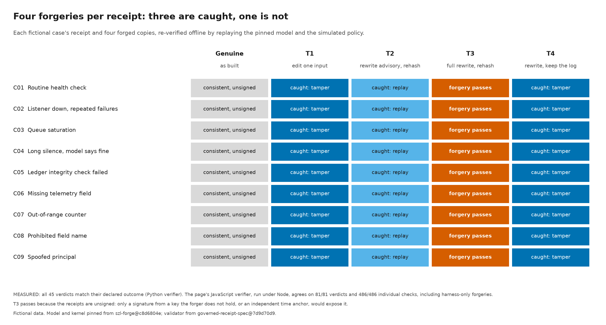
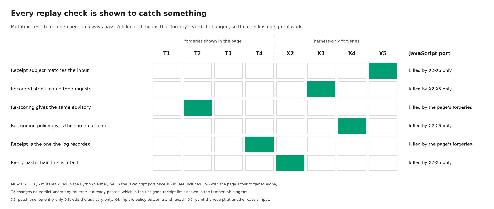
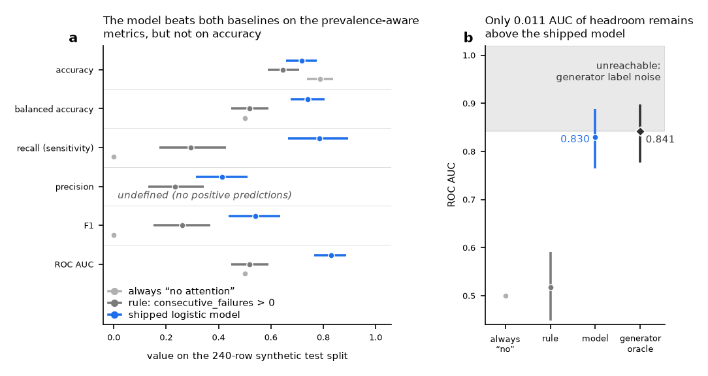

Evidence diagrams · rendered 2026-10-20 · fictional cases, synthetic telemetry
Four diagrams, each drawn from recorded outputs.
The first three follow one fictional governed decision from case to replay and test the checks that guard it. The fourth places an audited advisory model against two baselines and the ceiling its own data generator allows. Every number on this page is read from the recorded run outputs when the page is built.
- MEASURED
- computed by a recorded run
- REPORTED
- stated by a named source and not re-run here
- SIMULATED
- fixtures standing in for policy and approvals
- FICTIONAL
- invented case data
- UNKNOWN
- not established
![Eight-step flow for fictional case C04. 1, synthetic case: no successful delivery for 20 hours. 2, retrieved evidence: 7 records. 3, advisory decision: no attention advised, score 0.153 below threshold 0.16, while the generator's own risk is 0.376. 4, simulated policy rule P3 sends it to a human. 5, simulated approval not given. 6, receipt validator INCOMPLETE: source signatures not verified, clock not NTP-synced, no RFC 3161 time token. 7, replay structurally consistent, not authenticated. 8, live action blocked.](evidence-constellation-trace.png)
One governed decision, traced from case to replay
Fictional case C04: a relay reports no successful delivery for 20 hours while every other control looks healthy. The advisory model scores 0.153, under its 0.16 threshold, so it advises no attention; the synthetic generator's own risk for the same inputs is 0.376. The model is known to under-flag long outages, so simulated policy rule P3 sends the decision to a human. The approval is not given, and the live action stays blocked.


Four forgeries per receipt: three are caught, one is not
Each of the 9 fictional receipts is re-verified with four forged copies, 45 verdicts in all. Editing an input (T1), rewriting the advisory (T2), or rewriting it while leaving the hash-chained log alone (T4) is caught. A full rewrite with every digest recomputed (T3) passes: without a signature from a key the forger does not hold, or an independent time anchor, structural replay cannot tell it from the original.


Every replay check is shown to catch something
A check that never fails tests nothing. Each row forces one replay check to always pass; a filled cell marks a forgery whose verdict then changed. All six mutants are killed in the Python verifier and in its JavaScript port. The page's own four forgeries exercise only two of the six checks, so four harness-only forgeries (X2 to X5) cover the rest.


The audited model against two baselines and its generator's ceiling
oac-system-health-v1 on its 240-row synthetic test split, with bootstrap 95% intervals. The model beats an always “no attention” predictor and the one-line rule consecutive_failures > 0 on the prevalence-aware metrics. On accuracy the constant predictor scores 0.7875 against the model's 0.7167, a paired difference of -0.0708 whose 95% interval [-0.1500, +0.0083] includes zero. The model's ROC AUC of 0.830 sits 0.011 below the 0.841 ceiling set by the generator's own label noise, so this split leaves almost no room to show a better model.

What these diagrams do not show
- The diagrams describe oac-system-health-v1. The separate v2 release on the OAC record is not shown.
- The 9 cases are fictional and hand-written. They say nothing about model quality or generalization.
- Policy and approvals are simulated fixtures. No one approved anything.
- Receipts are unsigned and carry no independent time anchor. A consistent replay shows that the records agree with each other and with the pinned model, not who wrote them.
- The advisory model was trained only on synthetic operations telemetry. It is not clinical, and it refuses clinical field names at admission.
- Diagrams 1 to 3 are rendered from a local demo build that pins the sources below; that build is not published yet. The interactive version of the trace is not published either, and its rendering in a real browser has not been verified (UNKNOWN).
- The baselines and generator ceiling in diagram 4 were also added to the szl-forge evaluation lane (REPORTED; not re-run for this page).
Pinned sources
- Advisory model and kernel: szl-forge@c8d6804e
- Receipt validator: governed-receipt-spec@7d9d70d9
- Every file on this page, with its SHA-256: manifest.json